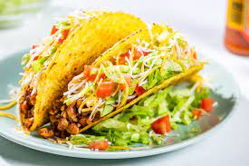

Tacos

Description
This recipe will show you how to make the absolute tastiest Tacos.
These Tacos wil not only have a great taste, but will also make sure to provide a great source of carbs and protein and valuable nutrients.
Ingredients
- Lean Ground Beef
- Salsa
- Tomatoes
- Cheese
- Onions
- Chili Powder
- Taco Shells
Steps
- Heat oven to 250 deegrees Farenheit and place ground beef and onions in a skillet for about 8 to 10 minutes.
- Stir in chili powder and onions and reduce heat.
- Put meat into a hard shell taco and top it off with lettuce, tomatoes and salsa.